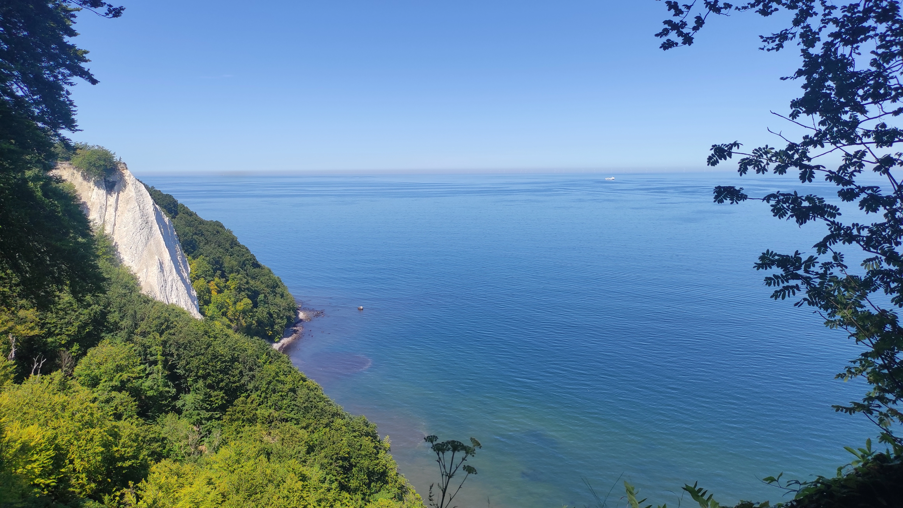
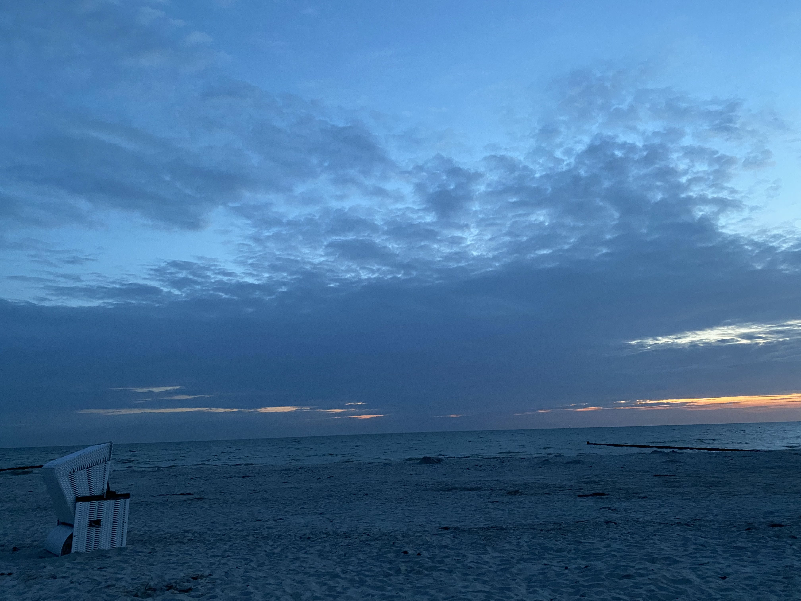
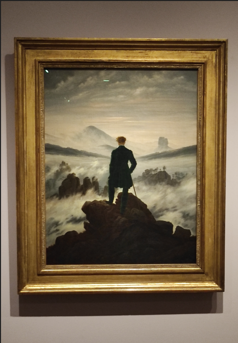

Rügen is an inspiring place for those who are willing to lose themselves into the nature and the astonishing white chalk coast of northern German Ostsee. The name slightly recalls the german word Ruhen and although the etymology is different, I like to think about Rügen as a place where artists back in the days used to go to walk and seek a certain inner-calm. While in Rügen, we went for an easy long walk that connects Königsstuhl to Sassnitz, an overall well kept path clean and accessible to hikers that can be walked in roughly 2 hours.

Hiddensee is a gem. I have been living in Germany over 10 years now and so far I haven't found in the country a place more relaxed (no cars are allowed, mostly people walking or cycling around), green, sunny (maybe I was just lucky), wild and cozy at the same time and generally beautiful with a strong and almost perfect attention to details especially for what concerns the local architecture than this remote 20 km long island on the Baltic sea. The place reminds me of some of the Astrid Lindgren's children stories that I used to read as a children and that really reinforced the good opinion I always had of Scandinavia in general, especially regarding small rural communities. The island also have a pretty strong food culture, mostly based on fish and local products that contribute to maintain the local economy to an adequate standard of living and to make the locals look quite relaxed and slightly more positive than most of former east Germans. For those who are into Fischbrötchen (a sandwich made with raw fish and a sauce called Remoulade) and generally into fish dishes, Hiddensee is a very good place to eat out, getting over the usual fried fish that normally you can find in the country and giving a few extra options that make of this place one extra reason to visit. In a certain way, the island reminds me of some places in Normandy, one in particular called Honfleur and there are definitely many more places in Europe that feel like Hiddensee, maybe in Sweden, a country I hope I'll have the chance to visit and spend enough time there soon, rather than the only short frugal visit of Malmoe that I did in the recent past.
Are pirates still cool nowadays? For me the answer is yes. In a world dated almost thousand years old than today, someone that could sail through oceans, holding his own morality of what is wrong and what is right, stealing and killing with the risk of getting killed, careless of the danger he was running into, still has its own fascination. The pirate that was able to walk for an extra 12 meters after being beheaded is one of the most famous legend of the area and also a tasty beer brand that of course pays homage to the character. Klaus Störtebeker, the pirate that the name is still a mystery (maybe it comes from the german "Stürz den Becher" which can be translated as "flip the cup") was probably born in 1360 somewhere in Germany, and according to certain sources, he could have not even been a pirate but more like a merchant. No matter what the real story looks like, it seems that Störtebeker legend went over the real and made of him a sort of a legend that is still recognized nowadays, depicting him as some sort of local Robin Hood and apparently giving him also some sort of political value, mostly celebrated around the area of Rügen and former east Germany.
Hanse in middle-low German (which was the language mostly used during its duration) means "society made on trade" and that is the main reason why the Hanseatic League came to existence, a league that was mostly working on removing restrictions and tariffs on trade and also serving the purpose of fighting piracy whenever possible. Starting from Lubeck, one of the most important trading centers around the late 12th century (although it has no specific foundation date because it was never formerly founded), the league was working through a network of cities with a strong political autonomy called Kontor (from the latin calculate, compute) and expanded all along the northern part of Germany, the southern part of Scandinavia, the Baltics states and part of Russia in the area around Novgorod.
Caspar David Friedrich, one of the biggest representatives of German Romanticism, was particularly inspired by Rügen. The movement was born in the second half of the eighteenth century under the influence of enlightment combined with Sturm und Drang (Sothebys).
Sturm und Drang was a movement that aimed to put humans in relation with the universe, the absolute, and the infinity, dismantling what they are and leaving them as a mere nature background. The message was clear: "go beyond" who you think you are and Friedrich's The Wanderer über dem Nebelmeer somehow became the manifesto of that movement. I was lucky enough to have the chance to see the picture while visiting MET in New York, shortly before the museum was shutting down and in those brief moments I had at disposal I tried to connect with Friedrich rebellious and wild spirit, represented through the Rückenfigur of a blonde, dishevelled man facing standing on the Kaiserkrone and looking down on the sea of fog.
The relation between Friedrich and the territory he belongs too can be seen in the painting Kreidefelsen aus Rügen, where the Rügen's kreide is represented. Once again the white chalk and the pale blue sea takes over the mere human figures (one probably Friedrich's wife) and celebrates nature and the smallest UNESCO world heritage german national park at its best.

Eggert Gustavs is the most recognizable "local" artist on Hiddensee. My perception while being on the island was that he succeded in being the most expressive personality between those thousands inhabitants that live on this corner or Germany. He was born in 1909 and his humble attitude took him to learn how to paint by himself, focusing also on other techniques such as watercolor or woodcut. His meeting with Vassily Kandinsky in Berlin, strongly affected his artistic style and part of his production it is available and open to public to be seen nowadays at Haus Gustavs.